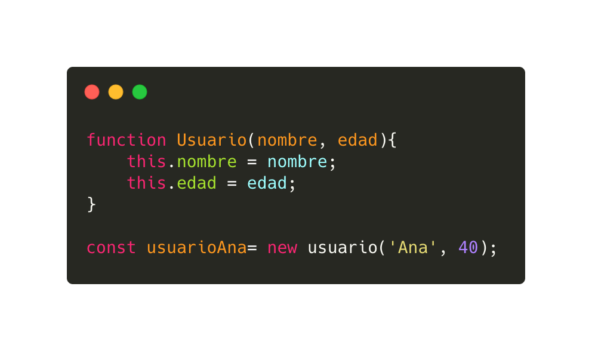

Referencias con JS
IDEAS CLAVE
- Por ID - permite elegir un elemento especificamente por su ID GetElementByID()
- Por ClassName - utilizando el getElementByClassName() permite eligir un elemento esta vez por la clase
- Por Etiqueta - Se referencia mediante alguna etiqueta que ya haya tenido algun elemento o contenido en HTML
NOTAS DE LA CLASE
Para poder manipular elementos HTML con JavaScript primero se debe referenciar.
Este se puede hacer de diferentes maneras:
- Por su ID
- Utilizando el metodo GetElementByID() se referencia al elemento que tenga un ID en especifico.
- Por su nombre de clase
- Similar a ID pero referenciando con el nombre de una clase utilizando getElementByClassName(), al utilizar devuelve un HTMLCollection (lista de elementos).
- Por su nombre de etiqueta
- Utilizando el getElementByTagName() devolviendo una coleccion de todos los elementos con etiqueta igual al HTMLCollection.
- Por su selector CSS
- Existen 2 metodos, el primero es querrySelector() que devuelve el primer elemento que coincide con un selector CSS. Utilizando un "ID" y si se usa varias veces, devuelve el primer elemento coincidente.
- Con quierySelectorAll() devuelve todos los elementos del documento que coinciden con un selector "ID" especificadom como un objeto Nodelist estatico.
